1과목: 진로상담
1. 다음과 관련된 진로상담의 목표는?
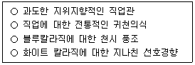
2. 윌리엄슨(E. Williamson)의 특성-요인 진로상담이론에서 진로문제를 진단하는데 도움을 주기 위한 내용이 아닌 것은?
3. 진로상담자의 역할로 옳지 않은 것은?
4. 사회인지진로이론(SCCT)에 관한 설명으로 옳지 않은 것은?
5. 하렌(V. Harren)의 의사결정 과정과 유형에 관한 설명으로 옳지 않은 것은?
6. 타이드만(D. Tiedeman)과 오하라(R. O'Hara)의 진로의사결정이론에 관한 설명으로 옳은 것은?
7. 다위스(R. Dawis)와 롭퀴스트(L. Lofquist)의 직업적응이론에 관한 설명으로 옳은 것을 모두 고른 것은?
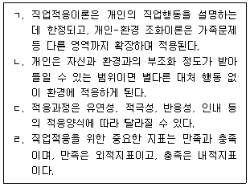
8. 진로전환에 관한 설명으로 옳은 것은?
9. 크롬볼츠(J. Krumboltz)의 우연학습이론에서 제시된 5단계 진로상담과정 중 다음 내용과 관련된 단계는?
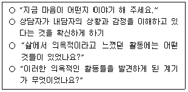
10. 장애인 진로상담에 관한 설명이 아닌 것은?
11. 구성주의적 진로상담에 관한 설명으로 옳은 것을 모두 고른 것은?
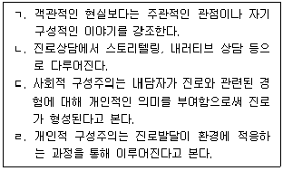
12. 다문화 청소년 진로상담에 관한 설명으로 옳은 것을 모두 고른 것은?
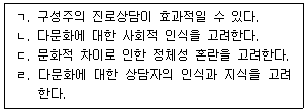
13. 갓프레드슨(L. Gottfredson)의 제한-타협 이론에 관한 설명으로 옳지 않은 것은?
14. 진로상담과정에서 보딘(E. Bordin)의 내담자 분류에 관한 설명으로 옳지 않은 것은?
15. 진로가계도(Career Genogram)에 관한 설명으로 옳지 않은 것은?
16. 진로정보의 평가에 관한 설명으로 옳지 않은 것은?
17. 진로상담에서 심리검사에 관한 설명으로 옳지 않은 것은?
18. 진로정보에 관한 설명으로 옳은 것을 모두 고른 것은?
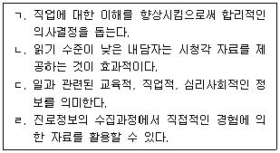
19. 다음 집단진로상담에 관한 설명으로 옳은 것을 모두 고른 것은?
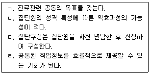
20. 긴즈버그(E. Ginzberg)의 진로발달이론에서 잠정기(tentative phase)의 하위 단계를 모두 고른 것은?
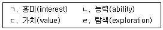
21. 수퍼(D. Super)의 생애진로발달이론에 관한 설명으로 옳지 않은 것은?
22. 생애진로사정(Life Career Assessment: LCA)에 관한 설명으로 옳지 않은 것은?
23. 다음 설명을 모두 충족하는 진로상담 검사는?
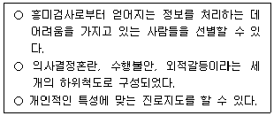
24. 샘슨 등(J. Sampson et al.)의 진로의사결정 정도에 따른 내담자 유형에 관한 설명으로 옳은 것을 모두 고른 것은?
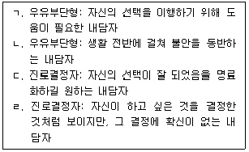
25. 여성 진로상담에 관한 설명으로 옳지 않은 것은?
2과목: 집단상담
26. 학교상담에서 청소년 집단상담 계획서에 포함될 내용이 아닌 것은?
27. 학교 장면의 집단상담에서 집단상담자의 전문적 자질을 모두 고른 것은?
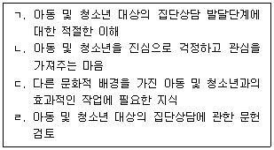
28. 청소년 집단상담에서 집단응집력에 관한 설명으로 옳지 않은 것은?
29. 벡(A. Beck)의 인지치료 집단상담에서 집단상담자의 역할로 옳지 않은 것은?
30. 게슈탈트 집단상담에서 접촉-경계 장애에 관한 설명으로 옳지 않은 것은?
31. 교류분석 집단상담에서 집단상담자의 역할로 옳지 않은 것은?
32. 해결중심 집단상담에서 집단상담자의 '알지 못함' 자세에 관한 설명으로 옳은 것을 모두 고른 것은?
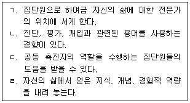
33. 얄롬(I. Yalom)의 집단상담에서 '지금-여기' 개입에 관한 설명으로 옳은 것을 모두 고른 것은?
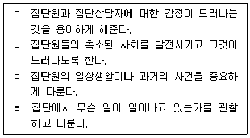
34. 코리(G. Corey)의 집단상담 초기단계에서 집단상담자의 효과적인 개입으로 옳지 않은 것은?
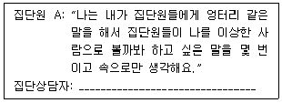
35. 실존주의 집단상담에서 실존적 불안에 관한 설명으로 옳은 것을 모두 고른 것은?
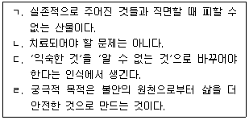
36. 청소년 집단상담자가 '차단하기' 기술을 사용해야 할 상황이 아닌 것은?
37. 청소년 집단상담에서 집단상담자의 윤리에 위반되는 경우를 모두 고른 것은?
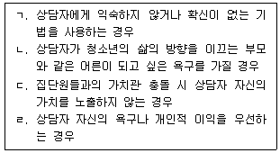
38. 얄롬(I. Yalom)이 제시한 치료적 요인으로 옳은 것을 모두 고른 것은?
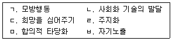
39. 집단상담에서 집단원의 변화와 성장을 촉진하는 치료적 요인이 아닌 것은?
40. 개인상담과 비교할 때 집단상담의 장점에 관한 설명으로 옳지 않은 것은?
41. 집단상담의 유형 중 성장집단에 관한 설명으로 옳은 것은?
42. 행동주의 집단상담에서 집단원의 목표에 관한 설명으로 옳지 않은 것은?
43. 심리극 집단상담에서 주로 활용되는 기법이 아닌 것은?
44. 개인심리학에 근거한 집단상담에 관한 설명으로 옳지 않은 것은?
45. 비자발적 청소년에 대한 집단상담에서 집단상담자의 개입으로 옳지 않은 것은?
46. 집단상담을 시작하기 전 필요한 작업에 관한 설명으로 옳지 않은 것은?
47. 집단상담 중기(전환 및 작업) 단계에서 주로 일어나는 행동이 아닌 것은?
48. 정신분석 집단상담에 관한 설명으로 옳은 것은?
49. 다음에 해당하는 집단의 유형은?
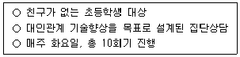
50. 집단상담 초기단계에서 상담자의 역할을 모두 고른 것은?
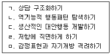
3과목: 가족상담
51. 가정폭력을 촉발하는 요인에 해당하지 않는 것은?
52. 사이버네틱스에 관한 내용으로 옳지 않은 것은?
53. 가정에서 중독 문제에 관한 내용으로 옳지 않은 것은?
54. 가족상담자의 윤리에 관한 설명으로 옳은 것을 모두 고른 것은?
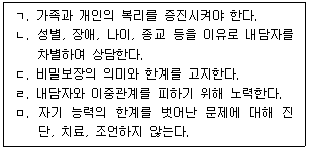
55. 구조적 가족상담에 관한 내용으로 옳지 않은 것은?
56. 다음은 인과관계의 순환성에 관한 내용이다. ( )에 들어갈 내용으로 옳은 것은?
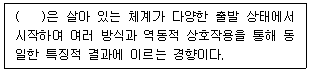
57. 일반체계이론에 관한 설명으로 옳은 것을 모두 고른 것은?
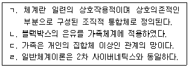
58. 보웬(M. Bowen)의 가족상담에 관한 내용으로 옳지 않은 것은?
59. 해결중심단기 가족상담의 목표 설정 원칙에 해당하지 않는 것은?
60. 가족상담자의 역할에 관한 내용으로 옳은 것을 모두 고른 것은?
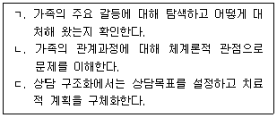
61. 다음은 리즈(T. Lidz)의 부부관계에 관한 내용이다. ( )에 들어갈 내용으로 옳은 것은?
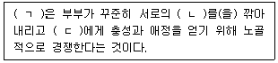
62. 가족상담 초기단계에 관한 내용으로 옳지 않은 것은?
63. 보웬(M. Bowen)의 가족상담에 관한 설명으로 옳지 않은 것을 모두 고른 것은?
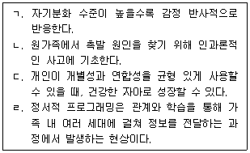
64. 전략적 가족상담 이론가와 상담기법의 연결로 옳지 않은 것은?
65. 해결중심단기 가족상담의 중심철학으로 옳은 것을 모두 고른 것은?
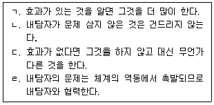
66. 자해시도 청소년의 가족사정을 위해 사용할 수 있는 도구와 목적의 연결로 옳지 않은 것은?
67. 사티어(V. Satir)의 경험적 가족상담에 관한 설명으로 옳지 않은 것은?
68. 다음에서 설명하고 있는 구조적 가족상담 기법은?
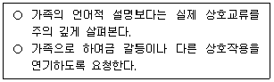
69. 카터(B. Carter)와 맥골드릭(M. McGoldrick)의 가족생활주기에 관한 설명으로 옳은 것을 모두 고른 것은?
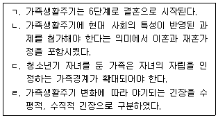
70. 다음 사례에 대한 가족상담 개입에 관한 내용으로 옳지 않은 것은?
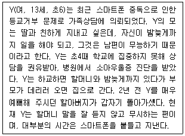
71. 가족상담의 기본 개념에 관한 내용으로 옳지 않은 것은?
72. 이야기치료에 관한 설명으로 옳지 않은 것은?
73. 다음에서 이야기치료 상담자가 시도하고 있는 개입 기법은?
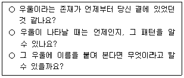
74. 경험적 가족상담에 관한 내용으로 옳지 않은 것은?
75. 가족상담자가 가정폭력 개입 시 고려해야 하는 사항으로 옳지 않은 것은?
4과목: 학업상담
76. 학업문제에 관한 설명으로 옳지 않은 것은?
77. 로젠샤인과 스티븐스(B. Rosenshine & R. Stevens)가 제시한 피드백 유형 중 다음에 해당하는 것은?
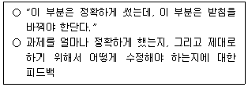
78. 다음에서 설명하는 학업과 관련된 문제는?
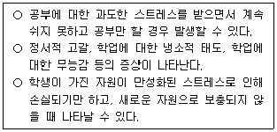
79. 학습부진에 관한 설명으로 옳지 않은 것은?
80. 학습과 관련된 요인 중 정의적 영역에 해당하는 것을 모두 고른 것은?
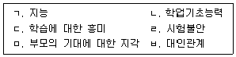
81. 읽기 및 청취 전략에 관한 설명으로 옳은 것은?
82. 클리포드(M. Clifford)의 건설적 실패이론(Theory of constructive failure)과 관련된 설명으로 옳은 것을 모두 고른 것은?
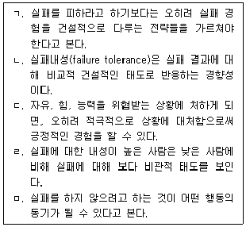
83. 초인지 전략에 관한 설명으로 옳지 않은 것은?
84. DSM-5-TR에서 제시한 특정학습장애(Specific Learning Disabilities)에 관한 설명으로 옳은 것은?
85. 앳킨슨과 시프린(R. Atkinson & R. Shiffrin)의 이중저장기억 모델에 관한 설명으로 옳은것은?
86. DSM-5-TR에서 제시한 주의력결핍 과잉행동장애(ADHD)의 증상으로 옳지 않은 것은?
87. 학업관련 검사에 관한 설명으로 옳지 않은 것은?
88. 영재아의 학습부진 원인에 해당하는 것을 모두 고른 것은?
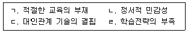
89. 다음에서 설명하는 이론을 제시한 학자는?
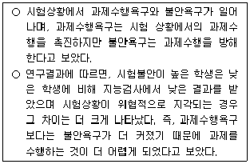
90. 데시와 라이언(E. Deci & R. Ryan)의 자기결정성 이론에서 제시한 동기가 아닌 것은?
91. 댄서로우(D. Dansereau)가 제시한 학습전략의 보조전략에 해당하는 것을 모두 고른 것은?
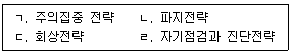
92. 시간계획과 시간관리에 관한 설명으로 옳지 않은 것은?
93. 다음에서 설명하는 학습된 무기력(learned helplessness)을 제시한 학자로 옳은 것은?
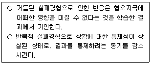
94. 로크와 라뎀(E. Locke & G. Latham)의 목표설정이론(goal setting theory)에 관한 설명으로 옳지 않은 것은?
95. 캔달과 브라스웰(P. Kendall & L. Braswell)이 제시한 주의집중력 향상을 위한 자기교시 훈련 단계로 옳지 않은 것은?
96. 맥키치(W. McKeachie)의 학습전략 분류 중 다음에 해당하는 인지적 전략으로 옳은 것은?
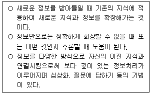
97. 발표불안과 관련된 설명으로 옳은 것을 모두 고른 것은?
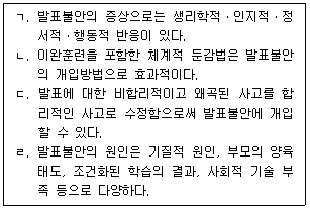
98. 토마스와 로빈슨(E. Thomas & H. Robinson)의 PQ4R에 해당하지 않은 것은?
99. 주의집중력 향상 전략 중 '내재적 언어를 통한 자기통제력 향상'에 관한 설명으로 옳지 않은 것은?
100. 다음에서 설명하는 이론을 제시한 학자로 옳은 것은?
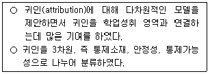